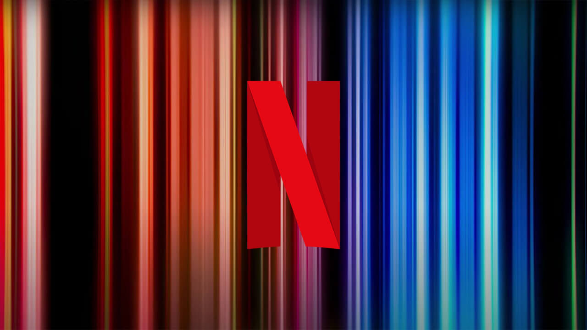

Plongez dans le monde captivant du divertissement où que vous soyez avec Netflix sur votre
mobile. Profitez de l'avantage ultime de la portabilité, transformant chaque lieu en votre
propre salle de cinéma personnelle.
Du suspense palpitant aux comédies hilarantes,
Netflix
offre une variété infinie de contenus, adaptés à votre emploi du temps chargé.
Découvrez
la
flexibilité du divertissement à la demande, faisant de votre mobile une fenêtre vers un
univers de films et de séries, disponible au bout de vos doigts.
App favorites
"Avoir Netflix sur mon téléphone équivaut à transporter un cinéma dans ma poche. Des choix infinis, des séries addictives, et la liberté de regarder selon mon propre calendrier. C'est tout simplement génial ! 📱🎬"
"L'application Netflix est mon compagnon de voyage incontournable. Que je sois dans un avion, un train ou une chambre d'hôtel, je peux toujours compter sur Netflix pour me divertir avec du contenu de qualité. 👏✈️"
"Netflix sur mobile rend mes soirées à la maison incroyablement agréables. Pas besoin de s'asseoir devant la télé, je choisis simplement mon film préféré, m'enveloppe dans une couverture et c'est parti pour une soirée parfaite. 🍿🏡"
"La fonction de téléchargement de Netflix sur l'appli mobile est un game changer ! Téléchargez des épisodes pour les regarder hors ligne pendant les trajets. Bye-bye, l'ennui ! 👋🚗"
Netflix sur mobile, c'est l'accès instantané à un festin visuel où que vous soyez. Emportez
vos films et séries préférés partout avec vous, transformant les attentes ennuyeuses en
moments de divertissement passionnants.
L'application mobile vous permet de
binge-watcher
vos émissions préférées pendant les déplacements, dans une file d'attente ou lors d'une
pause-café. Dites adieu aux contraintes horaires et vivez l'expérience cinématographique à
la demande.
Netflix sur mobile offre la liberté de créer votre propre programme, car le
spectacle continue, même en déplacement.
"See what's next"